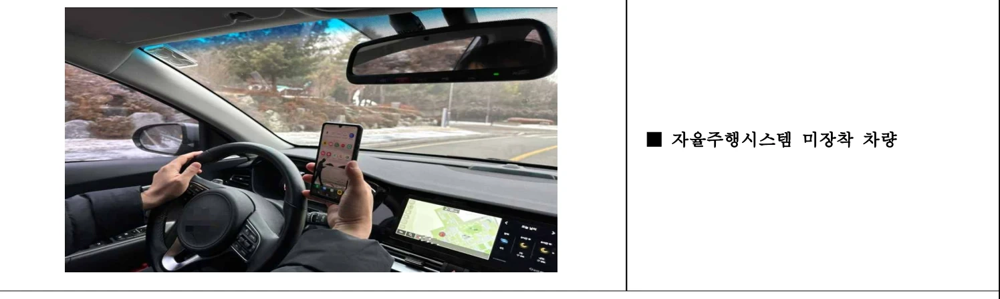

703. Hai câu nào là giải thích đúng về tình huống sau?

- ①Người lái xe đang lái xe chậm có thể sử dụng điện thoại di động.
- ②Người lái xe đang dừng xe có thể sử dụng điện thoại di động.
- ③Khi đang đi chậm, không được sử dụng điện thoại di động nhưng có thể điều chỉnh thiết bị hiển thị video.
- ④Người lái xe trên đường trong thành phố có nghĩa vụ phải thắt dây an toàn.
- ⑤Người đi cùng trên đường trong thành phố không có nghĩa vụ phải thắt dây an toàn.
Xem đáp án
Đáp án
② Người lái xe đang dừng xe có thể sử dụng điện thoại di động.
④ Người lái xe trên đường trong thành phố có nghĩa vụ phải thắt dây an toàn.
Căn cứ
Bạn có thể sử dụng điện thoại di động khi ô tô đang dừng (Luật Giao thông đường bộ, Điều 49, Khoản 1, Mục 10, A). Thiết bị hiển thị video (thường là hệ thống định vị) hiển thị video hướng dẫn địa lý hoặc video hướng dẫn thông tin giao thông có thể hiển thị video ở vị trí mà người lái xe có thể nhìn thấy khi lái xe (Luật Giao thông Đường bộ, Điều 49, Đoạn 1, Mục 11, Mục B 1). Dù đi trên loại đường nào, hành khách cũng phải thắt dây an toàn (Điều 50, Khoản 1 Luật Giao thông đường bộ).
Phần căn cứ là bản dịch máy để tham khảo.